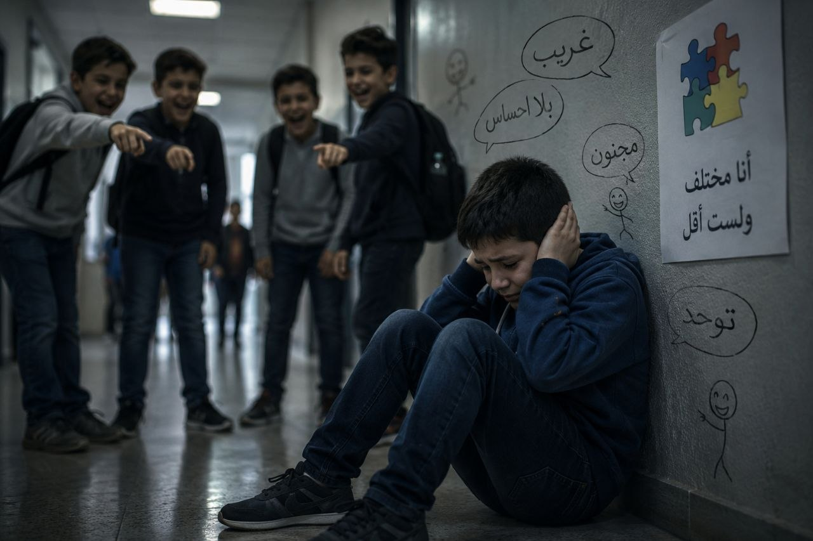

عندما كنت في الصف الرابع الابتدائي، كانت معلمة اللغة العربية تطلب منا واجباتٍ بشكلٍ مستمر، كم كنت أكره هذه المعلمة، لأنني كنتُ أعاني حتى أستطيع أداء هذه الواجبات.
كان أخي المصاب بالتوحد يبلغُ من العمر 6 سنوات حينها، وكان عندما يرى الضوء يصرخ بأعلى صوتٍ، ويخبط برجليه على الأرض، وقد يصلُ الأمر إلى الهجوم علينا، ولا يتوقف عن فعل ذلك حتى إطفاء النور. كنا مضطرين أن نعيش في ظلامٍ دامس، بعد أن يختفي ضوء النهار.
كنت أغلق باب الغرفة، وأضطر أن أغطي حاشية الباب بقماش، حتى لا يرى أخي الضوء، فتبدأ نوبة الغضب. في مرات كثيرة، كان أخي ينتبه لهذه الحيلة، فأضطر أنا أن أؤدي الواجب في وسط الصراخ والأجواء المتوترة، وأحيانًا على ضوء التلفاز. في ذات مرة قلت لأختي: أتمنى الموت لمعلمة اللغة العربية التي لا تكف عن طلب الواجبات، وأختي ترد: "وين تندري هي على وضعنا وعيشتنا السودة".
لطالما تمنيت أن يعلم الآخرون كيف تعيش أخت المصاب بالتوحد؟ في وضع غير مستقر نفسيًا واجتماعيًا، فما يعتبره الآخرون أمورًا عادية وبديهية في حياتهم، مثل حضور المناسبات الاجتماعية، السفر، الذهاب إلى الأسواق، الخروج إلى الأماكن العامة، هي بالنسبة لنا نِعَمٌ نتمنى أن نمتلكها. وإن قمنا بها، نقوم بها بشكلٍ متفرق، إذ يجب أن يضحي أحدنا ويبقى مع أخي المصاب من أجل أن يذهب الآخرون. وإن خرجنا مثل أي عائلة مع بعضنا، ومعنا أخي التوحدي، لا ترحمنا نظرات الآخرين عندما يقوم بسلوكياته المعتادة.
وعندما يأتي إلى منزلنا الضيوف، لا يستطيعون أن يخفوا عنا نظرات الشفقة والخوف من أخي، وكأنه أمامهم وحش أو حيوان مفترس...

كم تؤلمني سخرية الآخرين وتهكمهم على أخي، عندما يقوم بحركاتٍ تكراريةٍ معينة، تُعتبر من السلوكيات النمطية للتوحدي، مثل رفرفة اليدين، الأصوات العشوائية، الدوران، أو المشي على أطراف الأصابع.
وكم موجعٍ عندما أرى أمي تحاول أن تخبئ نظرات الأسى والوجع، بعد أن تقوم بتحميم أخي البالغ اليوم من العمر 18 عامًا. وعندما ترى أقرانه يجتازون امتحانات الشهادة الثانوية. وعندما يمرض أخي ولا يستطيع أن يفهم ويعبر عن الألم الذي يشعر به.
أتذكر أن أمي كانت دائمًا تتمنى أن تكون من الذين يدخلون الجنة بغير حساب، ولا سابقة عذاب، فكان لها ما تمنت.
فهي اليوم أم لمصاب بالتوحد، تتحمل نوبات غضبه وتعنيفه، وتحمل همه ليلًا ونهارًا، وتعيش حرمانًا ومعاناة لا يشعر بها إلا من عاشها، فبالتأكيد سوف يجازيها الله عن صبرها على هذا البلاء الجنة بدون حساب.
نحن عائلة المصاب بالتوحد، لا يرى أحد الوجع الذي نتعايش معه بشكلٍ يومي، ولا أعلم إلى متى سنبقى من الذين لا يراهم أحد...
ولكن يكفينا أن الله يرانا!